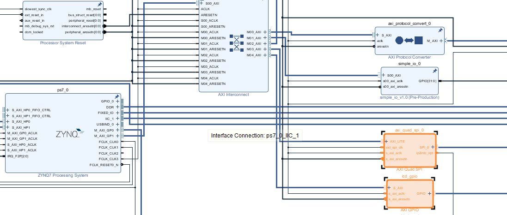
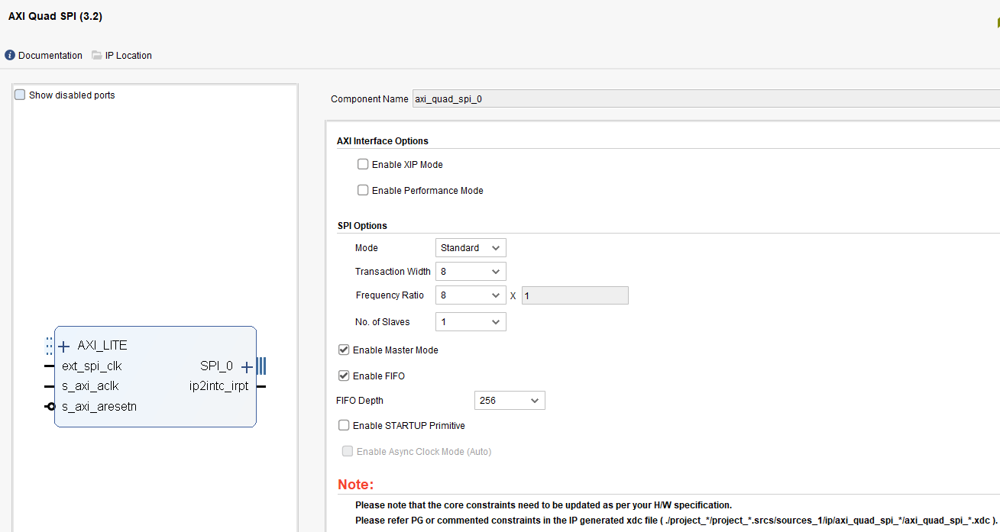
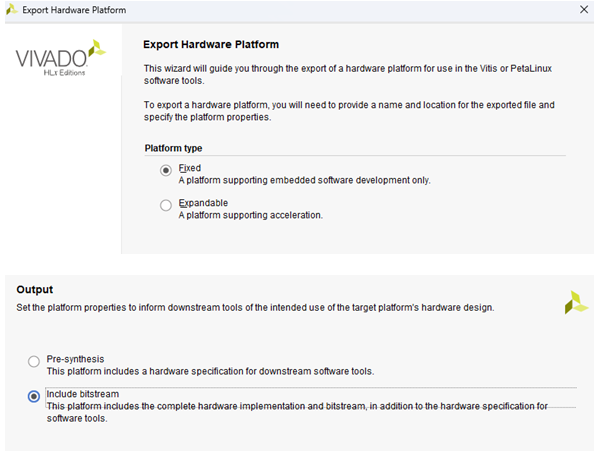
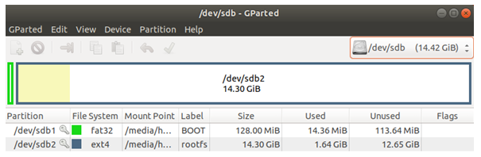

LVGL บน PYNQ-Z2 ตอนที่ 1: การสร้าง Linux Image พร้อมไดรเวอร์สำหรับจอ SPI
สวัสดีครับ! ในซีรีส์บทความนี้ เราจะมาทดลองใช้งานไลบรารีกราฟิก LVGL (Light and Versatile Graphics Library) บนบอร์ด PYNQ-Z2 ที่ใช้ชิป Zynq-7000 กันครับ โดยเราจะแสดงผลออกไปยังหน้าจอ SPI LCD สำหรับ Raspberry Pi (ใช้ชิปไดรเวอร์ ILI9486)
บทความนี้จะแบ่งออกเป็น 2 ตอน ในตอนแรกนี้ เราจะเน้นไปที่การเตรียมระบบ ตั้งแต่การออกแบบ Hardware บน FPGA, การสร้าง Petalinux Image, การเขียนไดรเวอร์ Framebuffer สำหรับจอ LCD, ไปจนถึงการสร้าง SD Card Image ที่พร้อมใช้งาน
ส่วนในตอนที่ 2 เราจะมาดูวิธีการคอมไพล์ LVGL และรันแอปพลิเคชันตัวอย่างบนบอร์ด PYNQ-Z2 ที่เราได้เตรียมไว้ครับ
แนวคิดการออกแบบ (Concept)
หัวใจของการทดลองนี้คือการเชื่อมต่อจอ SPI LCD เข้ากับบอร์ด PYNQ-Z2 แต่แทนที่เราจะใช้ SPI Controller ที่มีอยู่แล้วในฝั่ง PS (Processing System) เราจะเลือกใช้ SPI Controller ที่สร้างขึ้นในฝั่ง PL (Programmable Logic) ซึ่งก็คือส่วนของ FPGA นั่นเอง โดยเราจะใช้ Xilinx AXI Quad SPI IP Core ครับ
จากการตรวจสอบ Datasheet ของจอ ILI9486 พบว่ารองรับความเร็ว SPI สูงสุดที่ 15MHz ดังนั้นในการทดลองนี้ เราจะกำหนดความเร็วสัญญาณนาฬิกาของ SPI ไว้ที่ 12.5MHz ซึ่งเป็นความเร็วที่เหมาะสมและเพียงพอต่อการใช้งาน
ภาพรวมของสถาปัตยกรรมที่เราจะสร้างขึ้นมีดังนี้:
graph TD
subgraph "Zynq-7000 SoC"
subgraph "PS (Processing System - ARM Cortex-A9)"
PS1["LVGL Application ใน Userspace"]
end
subgraph "Linux Kernel Space"
PS1 -- Pixel Data --> FB_DEV["/dev/fb0"]
FB_DEV --> ili9486_driver["ILI9486 Framebuffer Driver"]
ili9486_driver --> SPI_Framework["Linux SPI Framework"]
ili9486_driver --> GPIO_Framework["Linux GPIO Framework"]
end
SPI_Framework --> SPI_IP
GPIO_Framework --> GPIO_IP
subgraph "PL (Programmable Logic - FPGA)"
SPI_IP["AXI Quad SPI IP"]
GPIO_IP["AXI GPIO IP"]
end
end
subgraph "External Hardware"
SPI_IP -- SPI Bus --> LCD_module["ILI9486 LCD Module"]
GPIO_IP -- Control_Signals --> LCD_module
end
การทำงานคือ LVGL จะส่งข้อมูล Pixel (Framebuffer) มายังไดรเวอร์ /dev/fb0 ที่เราสร้างขึ้น จากนั้นไดรเวอร์ของเราจะทำหน้าที่ส่งข้อมูลนี้ผ่าน AXI SPI ที่อยู่ใน PL ไปยังจอ LCD โดยอาศัย AXI GPIO สำหรับควบคุมสัญญาณอื่นๆ เช่น Data/Command (DC), Reset, และ Backlight (BL)
ลำดับการส่งข้อมูล Pixel จะเป็นไปตามแผนภาพนี้:
sequenceDiagram
participant App as LVGL App (Userspace)
participant Kernel as Linux Kernel (VFS)
participant FB_Driver as ili9486_fb Driver
participant SPI_Core as Linux SPI Core
participant HW as SPI Hardware (FPGA IP)
loop On Screen Update
App->>Kernel: write(fb_dev, pixel_data)
Kernel->>FB_Driver: ili9486_fb_write()
FB_Driver->>SPI_Core: spi_sync() / spi_transfer()
SPI_Core->>HW: ส่งข้อมูลผ่าน SPI Bus
end
ขั้นตอนการสร้างระบบ
เราจะแบ่งขั้นตอนการสร้างออกเป็น 3 ส่วนหลักๆ คือ การออกแบบฝั่ง FPGA, การสร้าง Linux Image ด้วย Petalinux, และการเตรียม SD Card
1. การออกแบบฝั่ง FPGA ด้วย Vivado
ในขั้นตอนนี้ เราจะสร้าง Block Design ใน Vivado เพื่อเพิ่ม IP Core ที่จำเป็นสำหรับการสื่อสารกับจอ LCD
- เพิ่ม IP Cores: เปิดโปรเจกต์ Vivado ของคุณขึ้นมา และใน Block Design ให้เพิ่ม
AXI Quad SPIและAXI GPIOIP Core เข้าไป
 - ตั้งค่า AXI Quad SPI: ทำการตั้งค่า IP Core ตามรูปด้านล่างนี้ โดยเฉพาะการเลือกโหมดการทำงานให้เป็น SPI Master
 - Export Hardware: หลังจากออกแบบ, สังเคราะห์ (Synthesize), และ υλοποίηση (Implement) เสร็จเรียบร้อย ให้ทำการ Export Hardware Platform โดยเลือก "Include bitstream" เราจะได้ไฟล์
.xsaมา ซึ่งจะถูกนำไปใช้ในขั้นตอนถัดไป

2. การสร้าง Embedded Linux ด้วย Petalinux
ในขั้นตอนนี้ เราจะใช้ Petalinux Tools เพื่อสร้างระบบปฏิบัติการ Linux ที่มีไดรเวอร์สำหรับจอ LCD ของเรา
2.1 การเตรียมสภาพแวดล้อม
ติดตั้งแพ็คเกจที่จำเป็น:
$ sudo apt update
$ sudo apt upgrade
$ sudo apt install htop vim openssh-server iproute2 gcc g++ net-tools libncurses5-dev zlib1g:i386 libssl-dev flex bison libselinux1 xterm autoconf libtool texinfo zlib1g-dev gcc-multilib build-essential screen pax gawk python3 python3-pexpect python3-pip python3-git python3-jinja2 xz-utils debianutils iputils-ping libegl1-mesa libsdl1.2-dev pylint3 cpio chrpath socat python
$ pip3 install --upgrade pip
$ sudo apt-get install tftp
$ sudo apt-get install tftpd-hpa
$ sudo apt-get install gparted
$ sudo apt install device-tree-compiler
ติดตั้ง Petalinux (ตัวอย่างใช้เวอร์ชั่น 2019.2):
$ mkdir ~/petalinux_2019
$ mv ~/Downloads/petalinux-v2019.2-final-installer.run ~/petalinux_2019/.
$ cd ~/petalinux_2019
$ chmod +x petalinux-v2019.2-final-installer.run
$ ./petalinux-v2019.2-final-installer.run
(ระหว่างติดตั้ง กด q เพื่อข้ามหน้าข้อความ)
เปลี่ยน Shell เริ่มต้นเป็น Bash:
เพื่อให้ Petalinux ทำงานได้อย่างถูกต้อง เราต้องเปลี่ยน Default Shell จาก dash เป็น bash
$ chsh -s /bin/bash
หลังจากนั้น reboot แล้วรันคำสั่ง:
$ sudo dpkg-reconfigure dash
ในหน้าจอที่ปรากฏขึ้นมา ให้เลือก No
2.2 การสร้างโปรเจกต์ Petalinux
สร้างโปรเจกต์:
ขั้นแรก ให้เตรียมไฟล์ .xsa ที่ได้จาก Vivado ไว้ในตำแหน่งที่เข้าถึงง่าย ในที่นี้ไว้บน Desktop เลย
hong@ubuntu:~$ ls ~/Desktop/xsa/
prj_top.xsa
จากนั้น เริ่มสร้างโปรเจกต์ Petalinux โดยอ้างอิงจาก Hardware Definition File (.xsa)
$ source ~/petalinux_2019/settings.sh
$ cd ~/
$ petalinux-create --type project --template zynq --name pynq_z2
$ cd pynq_z2/
$ petalinux-config --get-hw-description=~/Desktop/xsa
ตั้งค่าโปรเจกต์: ในเมนูที่ปรากฏขึ้นมา ให้ตั้งค่าตามนี้:
DTG Settings -> Kernel Bootargs -> disable generate boot args automatically
จากนั้นในช่องuser set kernel bootargsให้ใส่ค่านี้:
console=ttyPS0,115200 root=/dev/mmcblk0p2 rw earlyprintk quiet rootfstype=ext4 rootwait cma=256MImage Packaging Configuration --> Root filesystem typeเปลี่ยนเป็นEXT4 (SD/eMMC/SATA/USB)- ปิดการใช้งาน
[ ] Copy final images to tftpbootหากไม่ได้ใช้ NFS Boot
ตั้งค่า Kernel:
$ petalinux-config -c kernel
ในเมนู Kernel Configuration ให้เปิดใช้งานไดรเวอร์ที่จำเป็น เช่น USB Support
Device Drivers -> USB support -> [*]USB announce new devices
เพิ่ม Custom Driver Module: เราจะสร้าง Kernel Module สำหรับไดรเวอร์ Framebuffer ของเรา
$ petalinux-create -t modules --name fb-ili9486 --enable
จากนั้น แก้ไขไฟล์ซอร์สโค้ดของไดรเวอร์
$ gedit project-spec/meta-user/recipes-modules/fb-ili9486/files/fb-ili9486.c
และนำโค้ดด้านล่างนี้ไปใส่ในไฟล์:
// SPDX-License-Identifier: GPL-2.0
/*
* fb-ili9486.c (V2)
* - mmap + deferred IO
* - ARM fbcon safe ordering
*/
#include
#include
#include
#include
#include
#include
#include
#include
#include
#include
#define DRIVER_NAME "fb_ili9486"
#define LCD_WIDTH 320
#define LCD_HEIGHT 480
#define BPP 16
#define FB_SIZE (LCD_WIDTH * LCD_HEIGHT * 2)
//#define PRINT_DEBUG 1
#define PRINT_DEBUG 0
struct ili9486 {
struct spi_device *spi;
struct fb_info *info;
struct gpio_desc *dc;
struct gpio_desc *reset;
struct gpio_desc *bl;
u8 *fb_mem; /* framebuffer (vzalloc) */
u8 *tx_buf; /* SPI tx buffer */
};
/* ---------------- SPI helpers ---------------- */
static int ili9486_spi_write(struct spi_device *spi, const void *buf, size_t len)
{
struct spi_transfer t = { .tx_buf = buf, .len = len };
struct spi_message m;
spi_message_init(&m);
spi_message_add_tail(&t, &m);
return spi_sync(spi, &m);
}
static int ili9486_cmd(struct ili9486 *lcd, u8 cmd)
{
gpiod_set_value(lcd->dc, 0);
return ili9486_spi_write(lcd->spi, &cmd, 1);
}
static int ili9486_data(struct ili9486 *lcd, const void *buf, size_t len)
{
gpiod_set_value(lcd->dc, 1);
return ili9486_spi_write(lcd->spi, buf, len);
}
/* ---------------- Panel init ---------------- */
static int ili9486_hw_init(struct ili9486 *lcd)
{
gpiod_set_value(lcd->reset, 0);
msleep(20);
gpiod_set_value(lcd->reset, 1);
msleep(150);
ili9486_cmd(lcd, 0x01); /* SWRESET */
msleep(150);
ili9486_cmd(lcd, 0x11); /* SLPOUT */
msleep(150);
ili9486_cmd(lcd, 0x3A); /* COLMOD */
{ u8 v = 0x55; ili9486_data(lcd, &v, 1); }
ili9486_cmd(lcd, 0x36); /* MADCTL */
{ u8 v = 0x48; ili9486_data(lcd, &v, 1); }
ili9486_cmd(lcd, 0x29); /* DISPON */
gpiod_set_value(lcd->bl, 1);
return 0;
}
/* ---------------- Flush ---------------- */
static void ili9486_flush(struct ili9486 *lcd)
{
u16 *src = (u16 *)lcd->fb_mem;
u16 *dst = (u16 *)lcd->tx_buf;
int i;
for (i = 0; i < LCD_WIDTH * LCD_HEIGHT; i++)
dst[i] = cpu_to_be16(src[i]);
ili9486_cmd(lcd, 0x2C); /* RAMWR */
ili9486_data(lcd, lcd->tx_buf, FB_SIZE);
}
/* ---------------- Deferred IO ---------------- */
static void ili9486_deferred_io(struct fb_info *info,
struct list_head *pagelist)
{
#if PRINT_DEBUG
pr_info("fb_ili9486: deferred_io flush
");
#endif
struct ili9486 *lcd = info->par;
ili9486_flush(lcd);
}
/* ---------------- fb_ops ---------------- */
static ssize_t ili9486_fb_write(struct fb_info *info,
const char __user *buf,
size_t count, loff_t *ppos)
{
size_t avail = info->fix.smem_len - *ppos;
size_t len = min(count, avail);
#if PRINT_DEBUG
pr_info("fb_ili9486: ili9486_fb_write
");
#endif
if (copy_from_user(info->screen_base + *ppos, buf, len))
return -EFAULT;
*ppos += len;
return len; /* flush via deferred IO */
}
static int ili9486_fb_mmap(struct fb_info *info,
struct vm_area_struct *vma)
{
unsigned long size = vma->vm_end - vma->vm_start;
unsigned long pfn = virt_to_phys(info->screen_base) >> PAGE_SHIFT;
#if PRINT_DEBUG
pr_info("fb_ili9486: mmap called
");
#endif
if (size > info->fix.smem_len)
return -EINVAL;
vma->vm_flags |= VM_IO | VM_DONTEXPAND | VM_DONTDUMP;
return remap_pfn_range(vma, vma->vm_start,
pfn, size, vma->vm_page_prot);
}
static struct fb_ops ili9486_fb_ops = {
.owner = THIS_MODULE,
.fb_write = ili9486_fb_write,
.fb_mmap = ili9486_fb_mmap,
.fb_fillrect = cfb_fillrect,
.fb_copyarea = cfb_copyarea,
.fb_imageblit = cfb_imageblit,
};
/* ---------------- Probe ---------------- */
static int ili9486_probe(struct spi_device *spi)
{
struct fb_info *info;
struct ili9486 *lcd;
struct fb_deferred_io *defio;
int ret;
pr_info("fb_ili9486: V2-20251213
");
info = framebuffer_alloc(sizeof(*lcd), &spi->dev);
if (!info)
return -ENOMEM;
lcd = info->par;
lcd->spi = spi;
lcd->info = info;
lcd->dc = devm_gpiod_get(&spi->dev, "dc", GPIOD_OUT_LOW);
lcd->reset = devm_gpiod_get(&spi->dev, "reset", GPIOD_OUT_HIGH);
lcd->bl = devm_gpiod_get(&spi->dev, "bl", GPIOD_OUT_LOW);
lcd->fb_mem = vzalloc(FB_SIZE);
lcd->tx_buf = vzalloc(FB_SIZE);
if (!lcd->fb_mem || !lcd->tx_buf) {
ret = -ENOMEM;
goto err_rel;
}
info->screen_base = lcd->fb_mem;
info->fbops = &ili9486_fb_ops;
info->fix.smem_len = FB_SIZE;
info->fix.line_length = LCD_WIDTH * 2;
strcpy(info->fix.id, DRIVER_NAME);
info->var.xres = LCD_WIDTH;
info->var.yres = LCD_HEIGHT;
info->var.xres_virtual = LCD_WIDTH;
info->var.yres_virtual = LCD_HEIGHT;
info->var.bits_per_pixel = 16;
info->var.red.offset = 11; info->var.red.length = 5;
info->var.green.offset = 5; info->var.green.length = 6;
info->var.blue.offset = 0; info->var.blue.length = 5;
defio = kzalloc(sizeof(*defio), GFP_KERNEL);
if (!defio) { ret = -ENOMEM; goto err_vfree; }
defio->delay = HZ / 30;
defio->deferred_io = ili9486_deferred_io;
info->fbdefio = defio;
fb_deferred_io_init(info);
ret = register_framebuffer(info);
if (ret)
goto err_defio;
spi_set_drvdata(spi, info);
ili9486_hw_init(lcd);
return 0;
err_defio:
fb_deferred_io_cleanup(info);
kfree(defio);
err_vfree:
vfree(lcd->fb_mem);
vfree(lcd->tx_buf);
err_rel:
framebuffer_release(info);
return ret;
}
static int ili9486_remove(struct spi_device *spi)
{
struct fb_info *info = spi_get_drvdata(spi);
struct ili9486 *lcd = info->par;
unregister_framebuffer(info);
fb_deferred_io_cleanup(info);
kfree(info->fbdefio);
vfree(lcd->fb_mem);
vfree(lcd->tx_buf);
framebuffer_release(info);
return 0;
}
static const struct of_device_id ili9486_of_match[] = {
{ .compatible = "hong,ili9486" },
{ }
};
MODULE_DEVICE_TABLE(of, ili9486_of_match);
static struct spi_driver ili9486_driver = {
.driver = {
.name = DRIVER_NAME,
.of_match_table = ili9486_of_match,
},
.probe = ili9486_probe,
.remove = ili9486_remove,
};
module_spi_driver(ili9486_driver);
MODULE_LICENSE("GPL");
MODULE_AUTHOR("HONG");
MODULE_DESCRIPTION("ILI9486 framebuffer (mmap + deferred IO, ARM safe)");
ตั้งค่า Root Filesystem: เพื่อให้ไดรเวอร์ของเราถูกรวมเข้าไปใน Image ให้เปิดเมนู RootFS Configuration
$ petalinux-config -c rootfs
จากนั้นไปที่ User Packages ---> และเปิดใช้งาน [*] fb-ili9486
ตั้งค่า Device Tree: เพื่อให้ Linux รู้จักและโหลดไดรเวอร์ของเราสำหรับ Hardware ที่เราสร้างขึ้น เราต้องแก้ไข Device Tree โดยเพิ่ม Overlay เข้าไป
$ gedit project-spec/meta-user/recipes-bsp/device-tree/files/system-user.dtsi
โดยเพิ่มเนื้อหาต่อไปนี้ลงไป:
#include "system-conf.dtsi"
#include
/ {
/* define an alias for the GPIO controller */
lcd_gpio: gpio@41210000 {
compatible = "xlnx,xps-gpio-1.00.a";
gpio-controller;
#gpio-cells = <2>;
};
};
/* Enable the AXI Quad SPI controller */
&axi_quad_spi_0 {
status = "okay";
#address-cells = <1>;
#size-cells = <0>;
/* Define the LCD screen as a device on the SPI bus */
ili9486@0 {
status = "okay";
compatible = "hong,ili9486"; /* This must match the driver */
reg = <0>; /* Chip-select 0 */
spi-max-frequency = <12500000>; /* 12.5 MHz */
/* Link to the GPIOs for control signals */
dc-gpios = <&lcd_gpio 1 0 GPIO_ACTIVE_HIGH>;
reset-gpios = <&lcd_gpio 2 0 GPIO_ACTIVE_HIGH>;
bl-gpios = <&lcd_gpio 3 0 GPIO_ACTIVE_HIGH>;
rotation = <0>;
};
};
หมายเหตุ: แก้ไข gpio@41210000 ให้ตรงกับ Address ของ AXI GPIO ใน Block Design ของเรา
Build โปรเจกต์: ถึงเวลา Build ทุกอย่างเข้าด้วยกัน
$ petalinux-build
เมื่อเสร็จสิ้น เราจะพบไฟล์ Image ต่างๆ ในไดเรกทอรี images/linux/
hong@ubuntu:~/pynq_z2$ ls ~/pynq_z2/images/linux/
image.ub rootfs.cpio rootfs.cpio.gz.u-boot rootfs.manifest system.bit u-boot.bin uImage zynq_fsbl.elf
pxelinux.cfg rootfs.cpio.gz rootfs.jffs2 rootfs.tar.gz system.dtb u-boot.elf vmlinux ...
สร้าง SDK (เอาไว้สำหรับ build LVGL):
$ petalinux-build --sdk
เราจะใช้ SDK นี้ในบทความตอนต่อไป
3. การเตรียม SD Card
ขั้นตอนสุดท้ายคือการนำไฟล์ Image ที่ได้ไปใส่ใน SD Card เพื่อบูตบอร์ด PYNQ-Z2
สร้าง BOOT.BIN:
ไฟล์ BOOT.BIN คือไฟล์บูตที่รวมเอา First Stage Bootloader (FSBL), Bitstream (FPGA design), และ U-Boot เข้าไว้ด้วยกัน
$ petalinux-package --boot --force --fsbl images/linux/zynq_fsbl.elf --fpga images/linux/*.bit --u-boot
ฟอร์แมต SD Card:
ใช้โปรแกรม gparted หรือเครื่องมืออื่นๆ เพื่อแบ่ง SD Card ออกเป็น 2 พาร์ติชัน:
- Partition 1:
fat32(ขนาดประมาณ 256MB) สำหรับเก็บไฟล์บูต - Partition 2:
ext4(ใช้พื้นที่ที่เหลือ) สำหรับ Root Filesystem

คัดลอกไฟล์ลง SD Card:
- Mount พาร์ติชันแรก และคัดลอกไฟล์บูต
$ sudo mount /dev/sdb1 /mnt/sdb1 $ cd ~/pynq_z2/images/linux/ $ sudo cp BOOT.BIN image.ub /mnt/sdb1/. $ sync $ sudo umount /mnt/sdb1 - Mount พาร์ติชันที่สอง และแตกไฟล์ Root Filesystem
$ sudo mount /dev/sdb2 /mnt/sdb2 $ sudo tar xzf rootfs.tar.gz -C /mnt/sdb2/ $ sync $ sudo umount /mnt/sdb2
หมายเหตุ: /dev/sdb1 และ /dev/sdb2 อาจแตกต่างกันไปในแต่ละเครื่อง ให้ตรวจสอบให้แน่ใจด้วยคำสั่ง lsblk
เพียงเท่านี้เราก็ได้ SD Card Image ที่มี Linux และไดรเวอร์สำหรับจอ LCD พร้อมใช้งานแล้ว ในบทความตอนต่อไป เราจะมาเริ่มใช้งาน LVGL บนบอร์ด PYNQ-Z2 กันครับ!